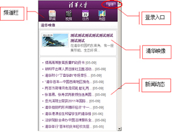

清华大学信息门户（移动版）（简称：移动门户）是清华大学校内移动信息的主要窗口，为全校师生提供丰富、深入的信息服务。
移动门户提供学校新闻、视频、公共日历、校园地图等公共信息浏览。首页如图1.1所示，由四个频道组成：新闻、视频、日历、地图。
* 新闻频道：通过新闻频道可以及时了解学校新闻网头条新闻、综合新闻、媒体清华等热点栏目的新闻信息；
* 视频频道：通过视频频道可以点播观看学校电视台的宣传短片，观看重要活动的网上直播；
* 日历频道：通过日历频道可以获得校庆活动、学术活动等各类活动的日程安排；
* 地图频道：通过地图频道可以欣赏校内建筑风貌，导引校内单位、住宅、宿舍等地理位置。

图1.1 移动门户首页
移动门户实现了与校内信息的衔接。全校师生使用个人账号登录后可以浏览学校通知公告、本人的教学、科研、学生、生活等个人信息；查询学校校历、空闲教室、校园卡交易等热点信息；订阅公共日历、安排个人日程，及时获取系统主动推送的各类提醒信息；同时系统还提供了校园卡挂失、修改密码等基础服务。登录后的页面由四个频道组成：通知公告、提醒信息、日历服务、综合查询。
* 通知公告：包括办公通知、七日汇总、教务公告、科研通知、海报、重要公告。
* 提醒信息：学校重大活动或与个人相关的提醒信息，如：选课活动、个人财务等。
* 日历服务：查询校内活动的日程安排信息。
* 综合查询：提供本学期课程、教室、在研项目、财务、校园卡等信息查询，以及校园卡挂失服务。